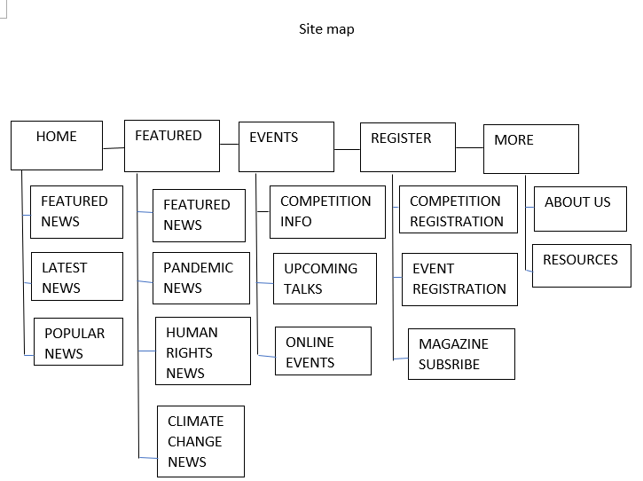
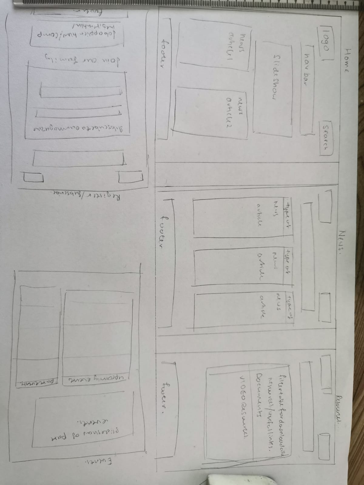
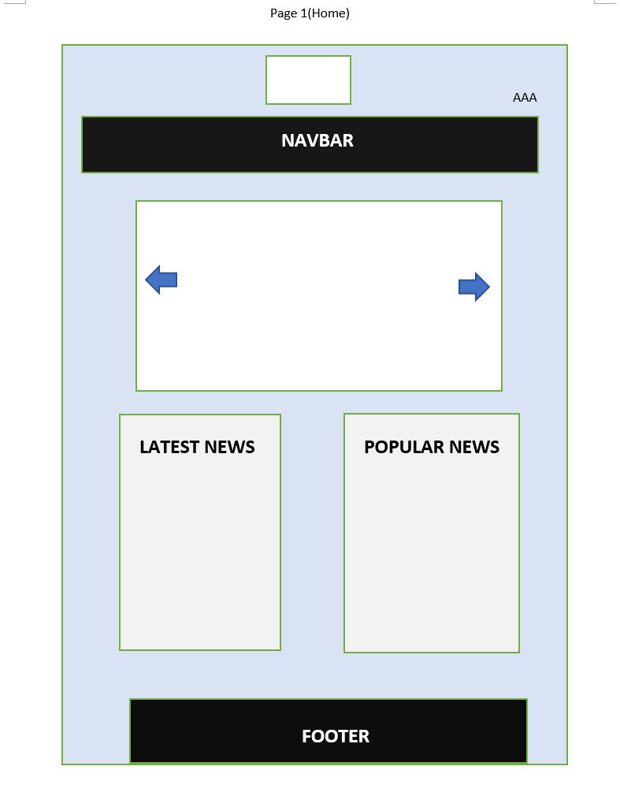
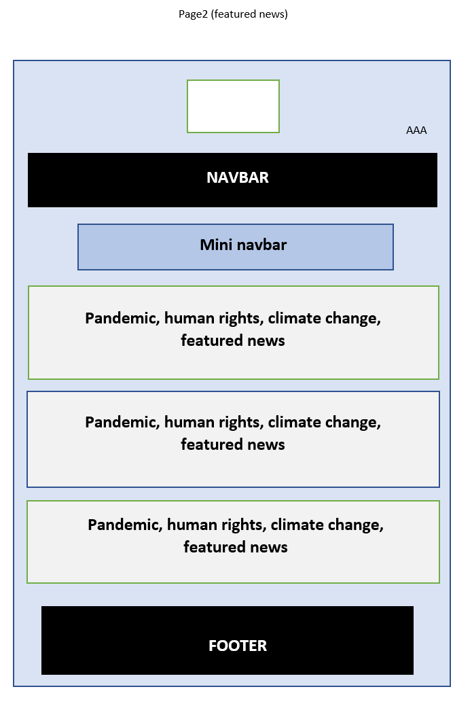
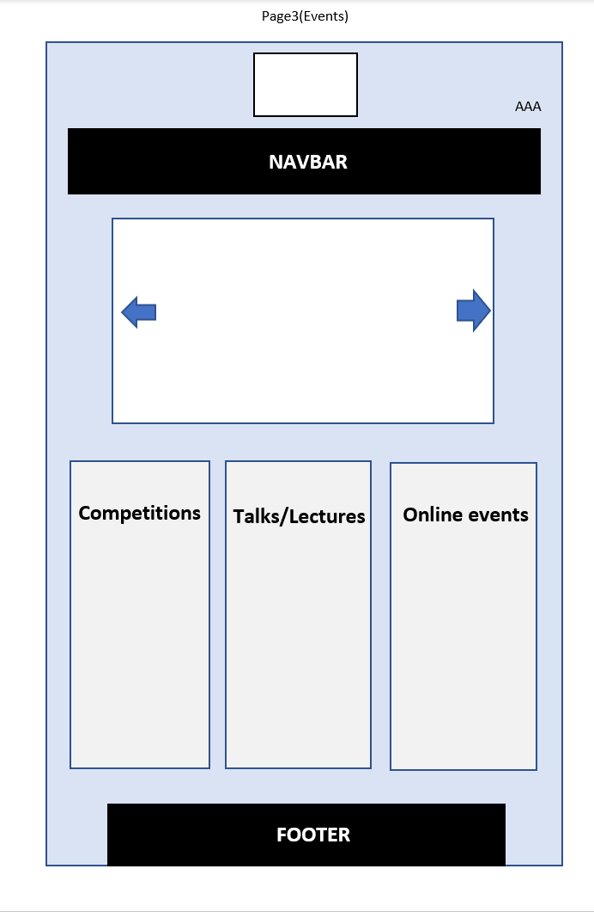
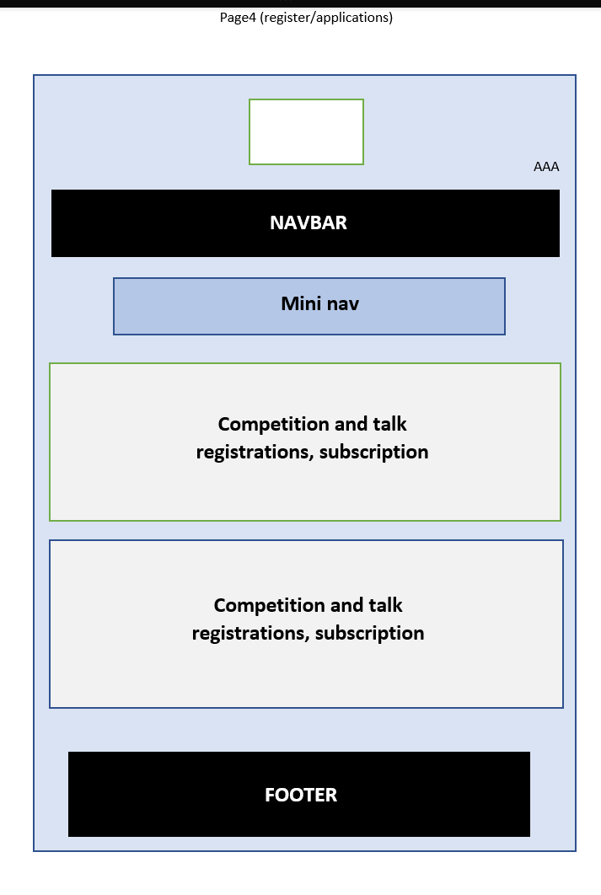
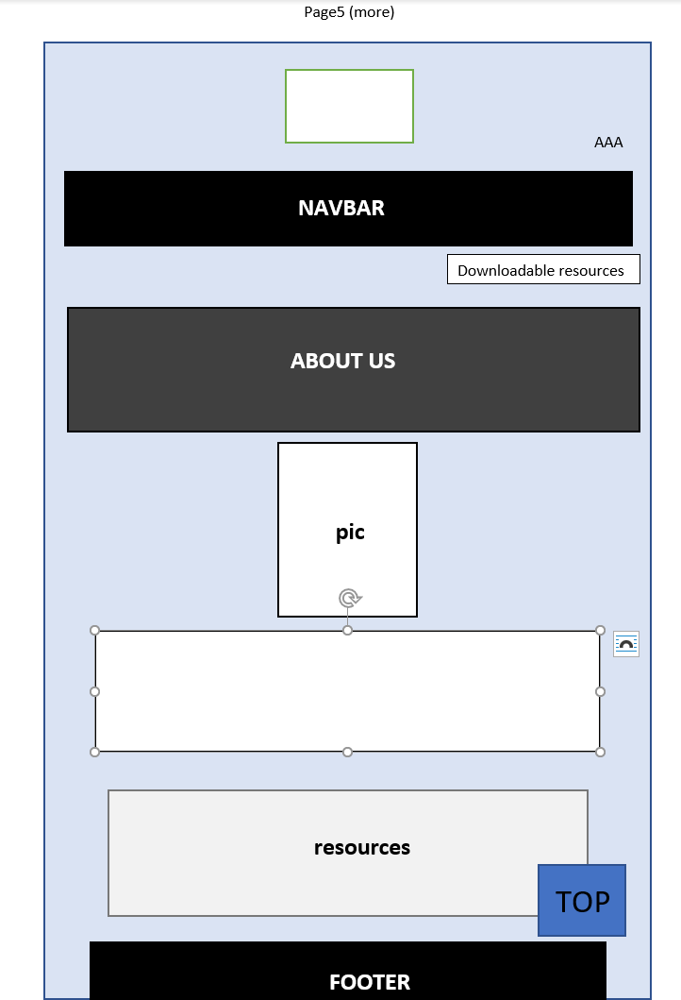

Introduction: What is the essential story being told by your site and what type of structure did you choose to implement.
My magazine was made to help youth and young adults interested in debate/public speaking have easier access to information regarding debate topics and skills. A top-down structure was used for majority of the pages with a main navigation bar to help navigate between the pages and a page unique smaller navigation bar to help navigate through layered content pages.
Inspiration: State 3 things that have inspired you when creating your website (e.g. guest speakers, websites, artists, blogs).
Since young I have always been curious about the reason and validation behind the implementation of certain laws and a persons actions. I was particularly inspired by a Ted Talks speaker nameed Jon Ronson that furthered my curiosity of how we viewed the actions of other and how we viewed ourselves. As i grew up i realised that through debating i would be able to constantly question myself and my morals to help widen my perspective on social issues. This sparked my interest in debate and inspired me to create my website to help others like me have easier access to a broad range of social issues with varying perspectives. While creating my website i was further inspired by the structure of content and page navigation from the Connect Magazine website , the navigation bar and header as well as the color scheme from the WIRED magazine and lastly the content from various debate related websites such as US speech and debate website.
Accessibility: State 3 ways in which your site is accessible to those with different abilities and needs (for example those with visual impairment)
Ways the site is accesible to those with different abilities and needs is:
Firstly, all images contain an alt property to aid users that view a page using a site reading program.
Secondly, a font change function has been applied to all pages of the website to aid the sites viewability short sighted users .
Thirdly, light background colours with dark font color and vice versa was used to aid with the page contrast for color blind users
Usability: State 3 ways in which you considered the usability of your site.
3 ways in which i considered the usability of my site was:
Firstly, throughout the website all pages are linked to each other to allow easy usage. Users interesetd in specific topics or stories would be able to find the information easily. All articles are also linked to their original site.
Secondly, for longer pages with stacked content which might make navigating difficult, a mini navbar that brings the user to sections of the page they might be interested and has been implemented such that it is fixed and can be accessed throughtout the page/ otherwise a top button would be available. Pages that lack this feature contains a side side structure for easy navigation
Thirdly, the site has been programmed to be responsive not only to users actions such as through font change sizes but to screen size changes as well such that even when the window has been resized the elements are still accessible and usable by the user.
Evaluation I: What aspects of your work do you think were particularly successful? Why? State 3 things you had to learn/find out by yourself when creating your site, and describe how you did that (i.e. what searches you did, any new tools/techniques you learned, any changes/adaptations you made to a particular resource to make it work with your site).
Some aspects of my work that i think were particularly succesful was the implementation of the scroll function and button groups to make a mini navbar that increases site usability. It was succesful as when futher combined with the fixed header and main navigation bar, the site becomes easily navigatable despite where the user is in the page.
3 things i had to learn by myself was: 1. I learned how to use the smooth scroll function that would be paired with a href link to help easy navigation of a page, this was through the smooth scroll tutorial from w3 schools which i combined with my knowledge of button groups to create a miniature navigation bar.
2. I also learned how to use the overflow function that helped me control the length of my table and design of certain elements on my website by searching online for vertical scroll tables.
3. An adaptation i made to the slideshow template from w3 schools to my website was to adapt it such that users would be able to view the slideshow pictures as a whole while still being able to view the fixed main navigation bar.
Evaluation II: What aspects of your work could be improved? How might you do things differently another time?
An aspect of my work that could be improved is the slideshow element of the website. In a different time i would like to learn how to more actively customise the slideshow element of the website. Though it had been changed in order to fit the flow of the website and designed to prevent overlap i would like to give it more features such as making it automatic. It could also have been improved by usage of templates.
Resources: What resources did you use in your work? List any sources of information, libraries, plugins, code or tools (you should also indicate inclusions from other sources within your code using comments)
Resources i used was How to tutorials from w3school and dicussion forums on certain functions from stack overflow [1] w3schools.com, 'HOW TO - Slideshow'[Online]. Available: https://www.w3schools.com/howto/howto_js_slideshow.asp. [Accessed: 27- February- 2021] [2] w3schools.com, 'HOW TO - Stacked Forms'[Online]. Available: https://www.w3schools.com/howto/howto_css_stacked_form.asp. [Accessed: 3- March- 2021] [3] w3schools.com, 'HOW TO - Email Newsletter'[Online]. Available: https://www.w3schools.com/howto/howto_css_newsletter.asp. [Accessed: 3- March- 2021] [4] w3schools.com, 'HOW TO - Filter/Search Table'[Online]. Available: https://www.w3schools.com/howto/howto_js_filter_table.asp. [Accessed: 10- March- 2021] [5] w3schools.com, 'HOW TO - Download Link'[Online]. Available: https://www.w3schools.com/howto/howto_html_download_link.asp. [Accessed: 10- March- 2021] [6] w3schools.com, 'HOW TO - Scroll Back To Top Button'[Online]. Available: https://www.w3schools.com/howto/howto_js_scroll_to_top.asp. [Accessed: 20- March- 2021]
Appendix A: Site map,

Appendix B: wireframes and mock-ups
Wireframe
Mock-ups
